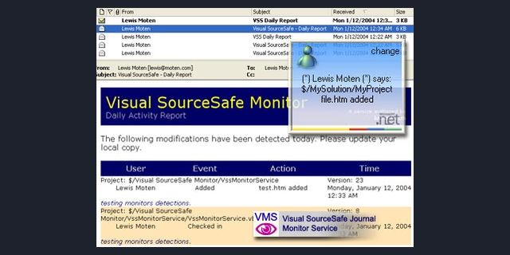

Visual SourceSafe Journal Monitor Service
VB.NET Windows service, January 2004

A Windows service that watches a Visual SourceSafe database and sends alerts and daily reports, so a team in several time zones stops waiting on exclusive checkouts.
Source My Planet Source Code archive (2000s)
Executive summary
Why it exists
I worked with remote teammates in other time zones, and Visual SourceSafe used exclusive checkouts. A file checked out overnight somewhere else meant waiting.
Outcome
Published on Planet Source Code in January 2004.
My role
Author.
Technical overview
How it works
A service built from scratch, inspired by Doug Schmidt's SSMonitor. It reads the SourceSafe journal and sends alerts by email, MSN or Windows Messenger, or a plug-in. Each alert has its own filters and recipients, and each user has a time zone. Daily reports include who checked in without a comment. Storage is SQL Server or XML, and there is an installer.